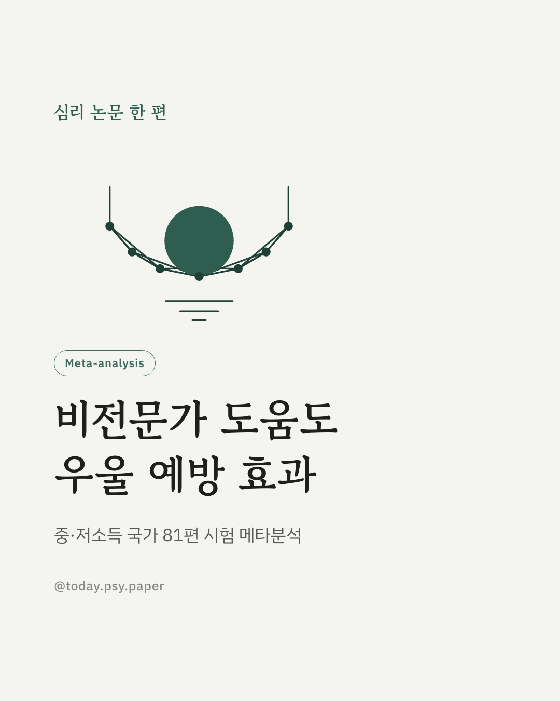
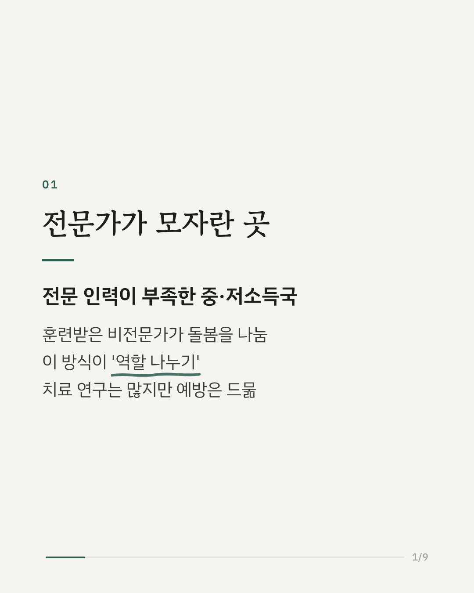
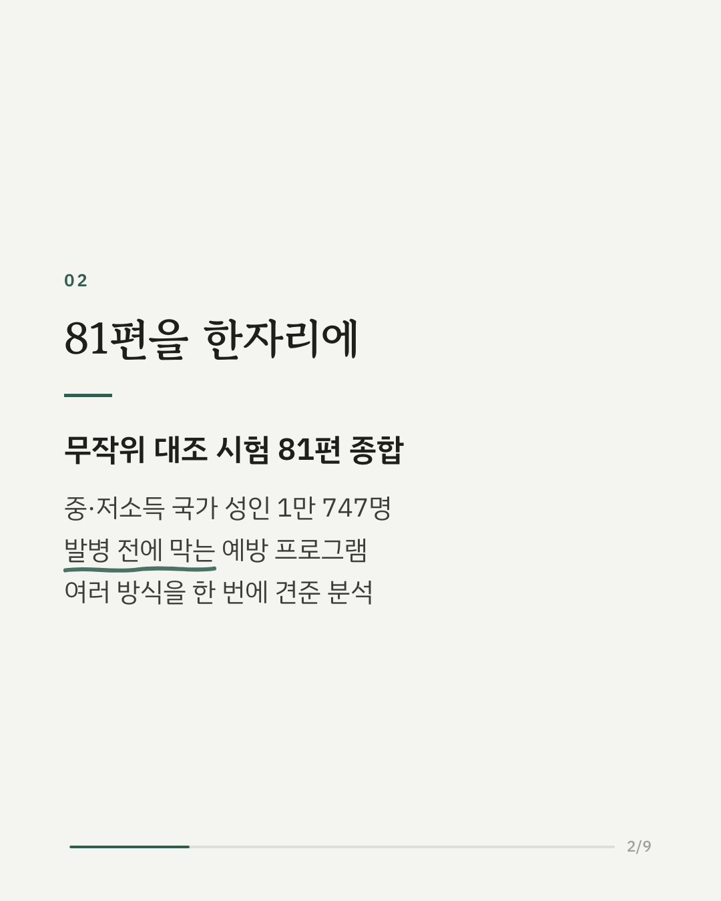
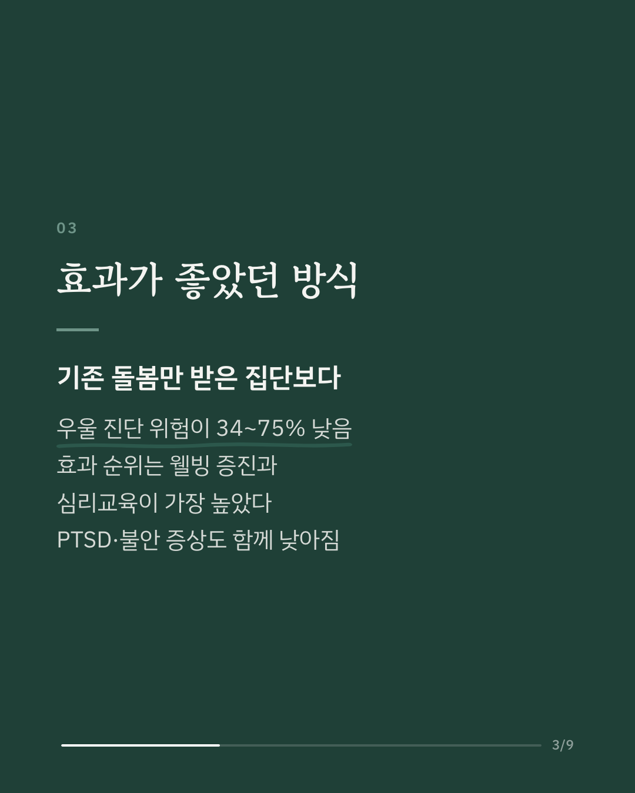
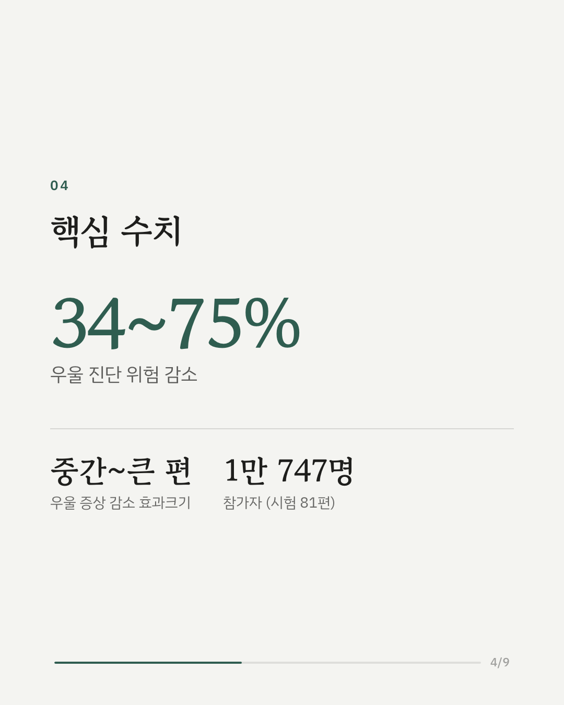
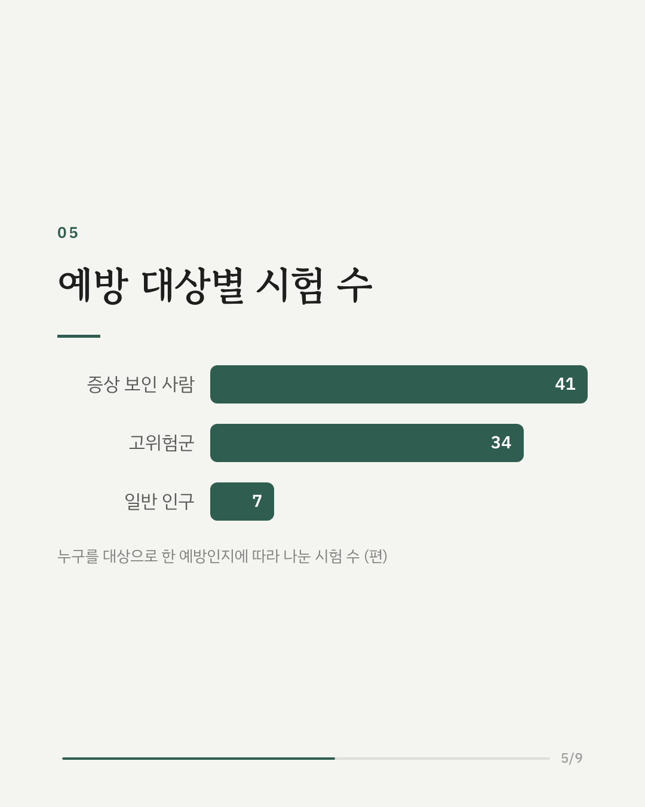
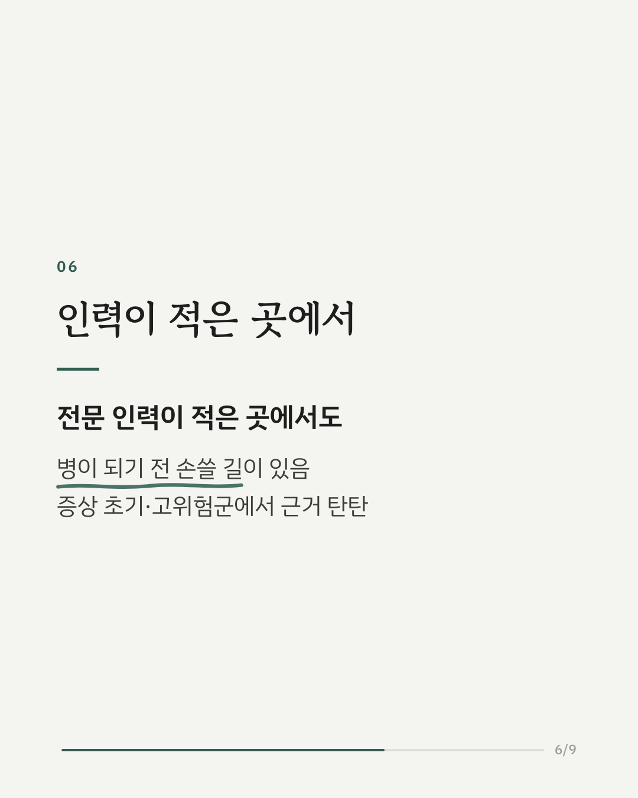
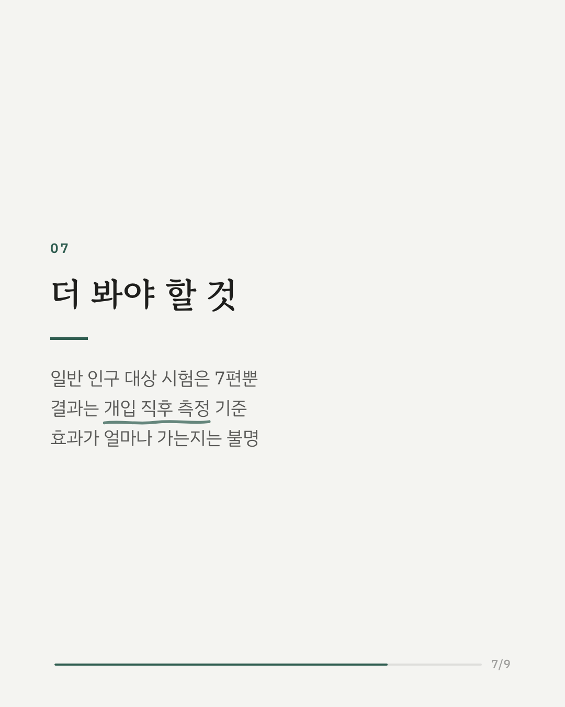
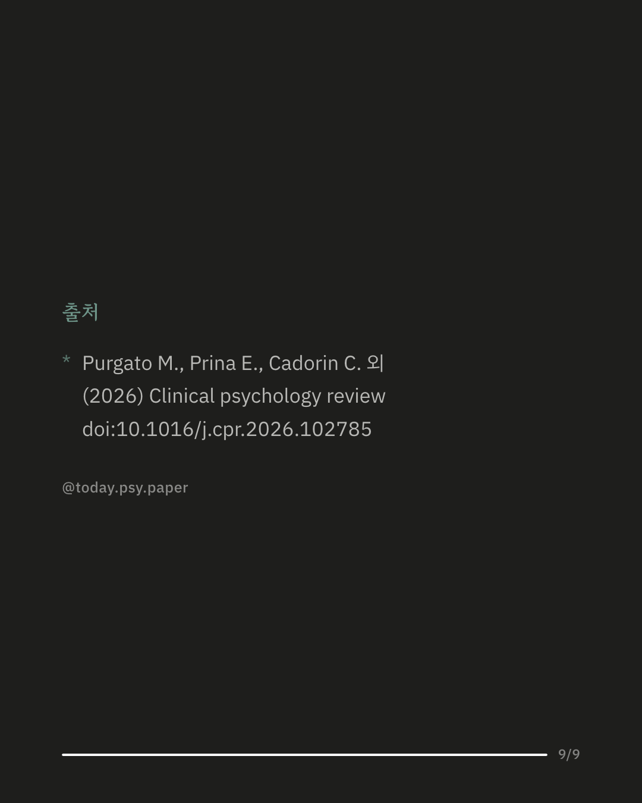

정신과 전문가가 부족한 중·저소득 국가에서는 훈련받은 지역 보건요원 같은 비전문가가 심리 지원을 나눠 맡는 방식(task-sharing)이 쓰입니다. 이 방식이 우울증과 불안, 외상 후 스트레스 장애를 미리 막는 데도 효과가 있는지, 무작위 대조 시험 81편(참가자 1만 747명)을 모아 여러 방식을 한 번에 비교한 네트워크 메타분석입니다. 기존 돌봄만 받은 경우와 비교해 웰빙 증진 프로그램, 부모 대상 심리교육, 요가·마음챙김, 여러 요소를 묶은 프로그램은 우울 진단 위험을 34~75% 낮췄습니다. 방식끼리 견줬을 때는 웰빙 증진과 심리교육의 효과 순위가 가장 높았습니다. 우울 증상 점수도 중간에서 큰 편의 폭으로 낮아졌고, 외상 후 스트레스 증상과 불안에서도 비슷한 결과가 나왔습니다. 전문 인력이 적은 곳에서도 병이 생기기 전에 손쓸 방법이 있다는 근거입니다. 다만 일반 인구 전체를 대상으로 한 시험은 7편뿐이어서, 근거는 이미 증상이 있거나 위험이 높은 사람에게 더 탄탄합니다. 출처: Clinical Psychology Review (2026), 'Comparative efficacy of task-sharing psychosocial interventions for preventing common mental disorders in low- and middle-income countries: A systematic review and network meta-analysis with 10,747 participants' DOI: 10.1016/j.cpr.2026.102785 #임상심리 #정신건강정보 #심리학연구 #논문리뷰 #우울증예방 #불안장애 #메타분석 #지역사회정신건강
python3 publish.py 42561576